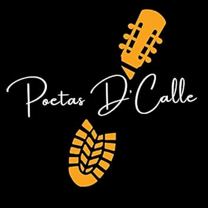

Programa de Fiestas Santa Ana 2025
Brea de Aragón

Viernes 25 de julio
11:45 — Procesión y Misa en honor a Santa Ana.
18:00 — Apertura de la barra.
19:00 — Fiesta de la cerveza y música en directo.

DSEIK DJ

Vasos Personalizados
21:30 — Rifa benéfica.
22:00 — Rondalla del grupo de jota por las calles del pueblo.
23:00 — Actuación “MINT VALLEY” para los niños en la Plaza de España.
Sábado 26 de julio
09:00 — Apertura de la “II Feria de comercio y turismo contra la despoblación”.
11:00 — Juegos medievales para los niños en la Plaza de España.
11:00 — Apertura de la barra.
12:00 — Misa Mayor.
14:30 — Comida Popular.
Plato principal: Pollo al chilindrón con patatas
Pan
Bebida: agua o sangría
Postre
✅ ¡Todo por solo 12 €!
16:30 — Concurso de guiñote (10 € por pareja, premio a repartir).
17:00 — Hinchables acuáticos, mojitos en la barra y música en directo.
19:00 — Actuación del grupo Poetas de la Calle.

21:30 — Rifa benéfica.